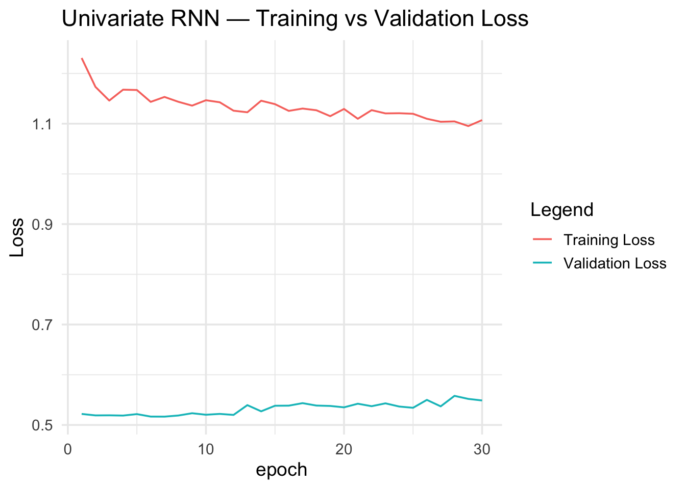
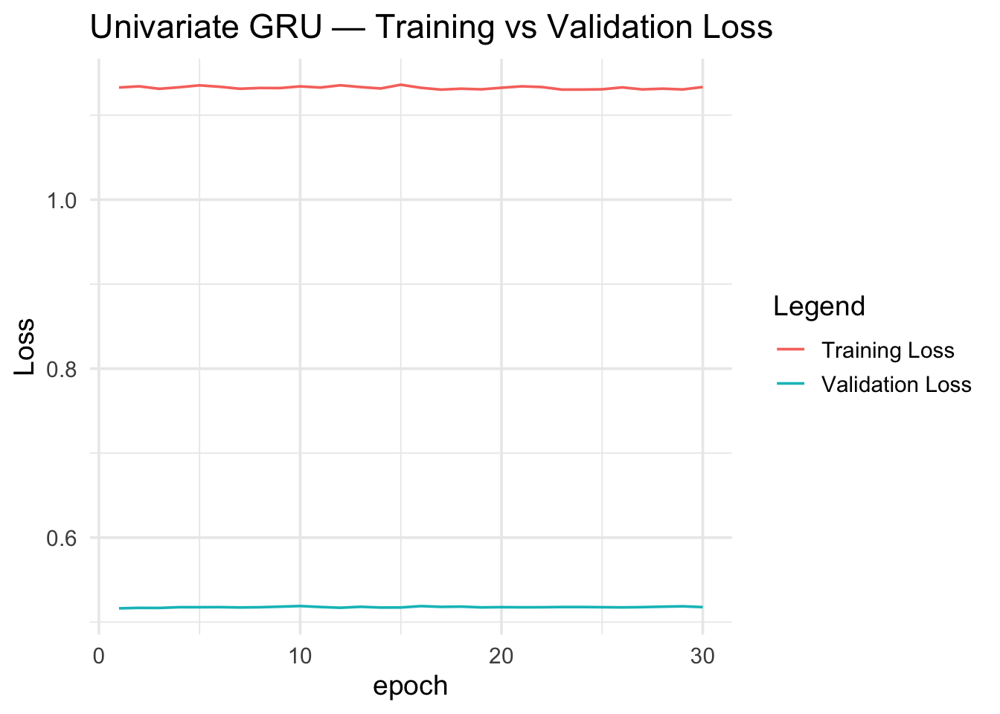
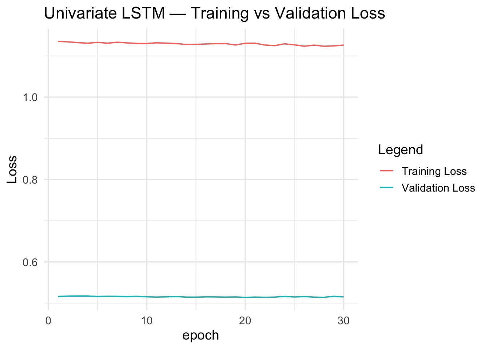
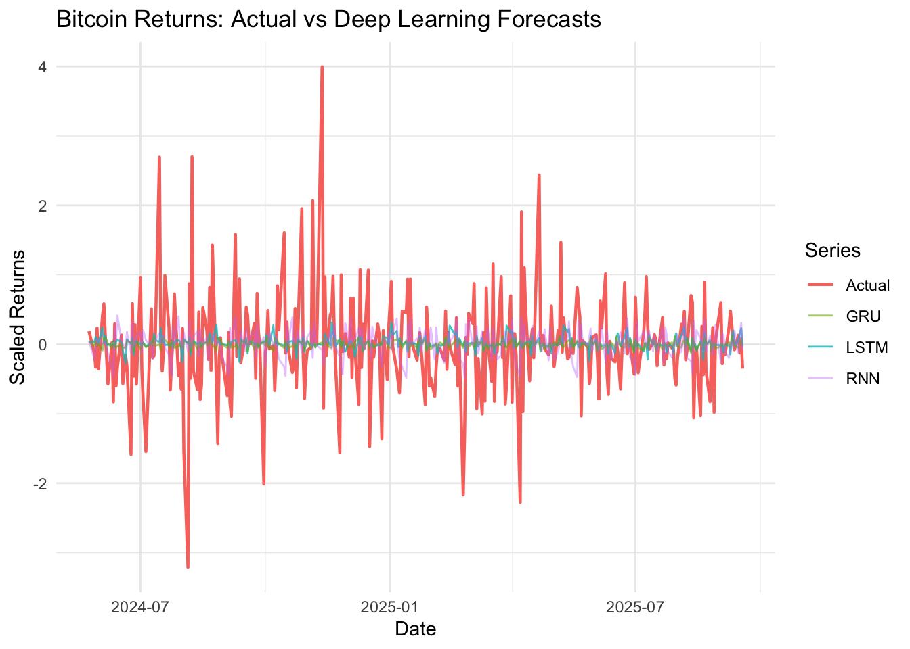
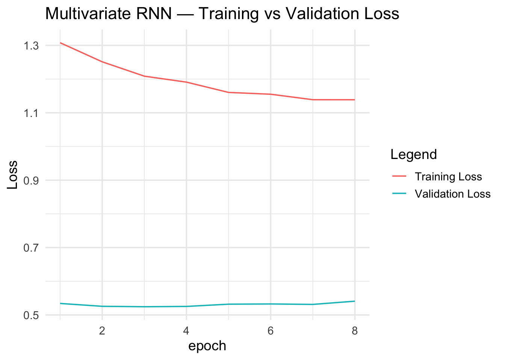
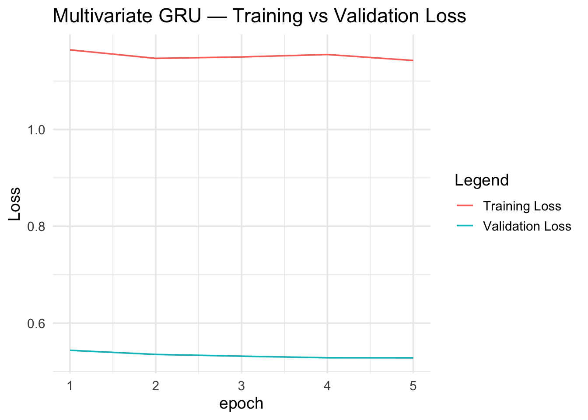
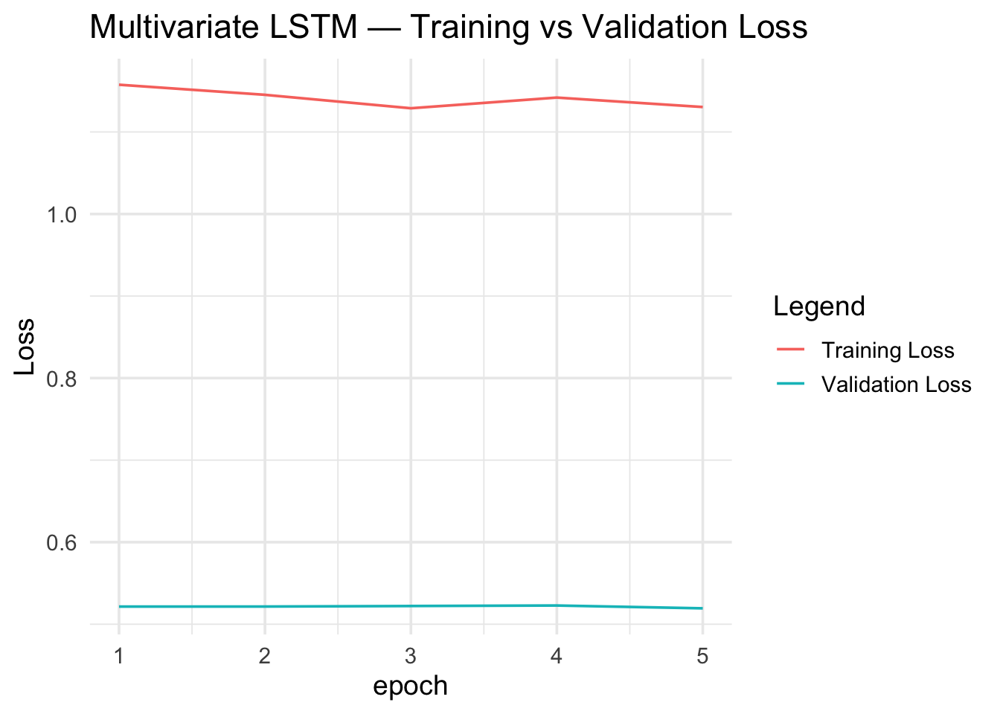
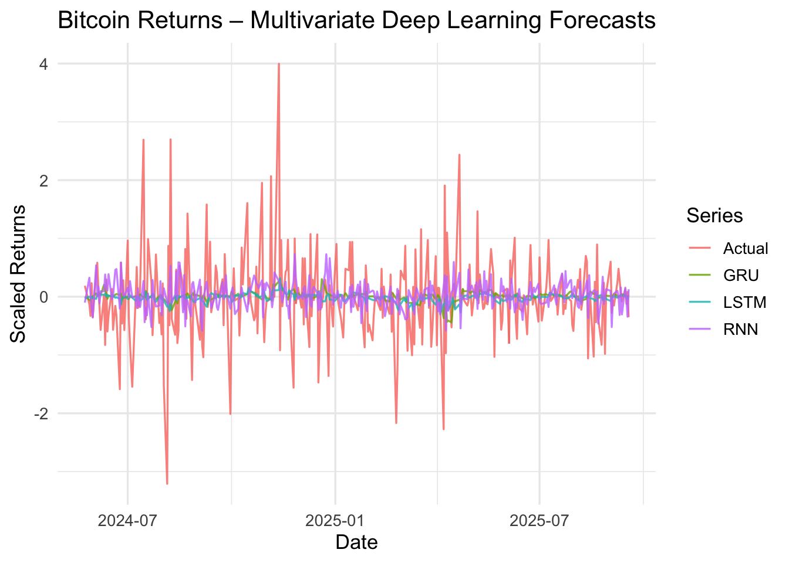

Code
library(tensorflow)
library(reticulate)
tf <- tensorflow::tf
keras <- tf$keras
library(quantmod)
library(tidyverse)
library(zoo)
set.seed(123)start_date <- as.Date("2019-01-01")
end_date <- as.Date("2025-09-18")
load_fred_data <- function(symbol, start, end) {
tryCatch(
getSymbols(symbol, src = "FRED", from = start, to = end,
auto.assign = FALSE),
error = function(e) {
cat("FAILED:", symbol, "\n")
NULL
}
)
}
sp500_data <- load_fred_data("SP500", start_date, end_date)
vix_data <- load_fred_data("VIXCLS", start_date, end_date)
btc_data <- load_fred_data("CBBTCUSD", start_date, end_date)
nasdaq_data <- load_fred_data("NASDAQCOM", start_date, end_date)
usd_data <- load_fred_data("DTWEXBGS", start_date, end_date)
price_data <- merge(btc_data, sp500_data, vix_data, nasdaq_data, usd_data)
colnames(price_data) <- c("Bitcoin", "SP500", "VIX", "NASDAQ", "USD")
price_data <- price_data |>
fortify.zoo() |>
as_tibble() |>
drop_na()
price_data$Bitcoin <- as.numeric(price_data$Bitcoin)
btc_ret <- diff(log(price_data$Bitcoin))
btc_ret <- btc_ret[!is.na(btc_ret)]btc_scaled <- scale(btc_ret)
y <- as.numeric(btc_scaled)
lookback <- 30
horizon <- 1
make_sequences <- function(series, lookback) {
X <- list()
Y <- list()
for (i in seq(lookback, length(series) - 1)) {
X[[length(X) + 1]] <- series[(i - lookback + 1):i]
Y[[length(Y) + 1]] <- series[i + 1]
}
X <- array(unlist(X), dim = c(length(X), lookback, 1))
Y <- array(unlist(Y), dim = c(length(Y), 1))
storage.mode(X) <- "double"
storage.mode(Y) <- "double"
list(X = X, Y = Y)
}
seqs <- make_sequences(y, lookback)
n <- dim(seqs$X)[1]
train_idx <- floor(0.8 * n)
X_train <- seqs$X[1:train_idx, , , drop = FALSE]
y_train <- seqs$Y[1:train_idx]
X_val <- seqs$X[(train_idx + 1):n, , , drop = FALSE]
y_val <- seqs$Y[(train_idx + 1):n]
# Convert R arrays
X_train_tf <- tf$convert_to_tensor(X_train, dtype = tf$float32)
y_train_tf <- tf$convert_to_tensor(y_train, dtype = tf$float32)
X_val_tf <- tf$convert_to_tensor(X_val, dtype = tf$float32)
y_val_tf <- tf$convert_to_tensor(y_val, dtype = tf$float32)We use daily closing prices for Bitcoin, S&P 500, NASDAQ, VIX, and the USD Index obtained from FRED.
Deep learning models require a supervised structure, so we transform the raw price series into:
Log Returns
[ r_t = (P_t) - (P_{t-1}) ]
Scaling
All return series are standardized with Z-score normalization.
Windowed Sequences (Lookback = 30)
Train/Validation Split (80/20)
First 80% used for training, last 20% for validation to evaluate out-of-sample performance.
# Simple RNN model using tf$keras
rnn_model <- keras$models$Sequential()
rnn_model$add(keras$layers$Input(shape = as.integer(c(lookback, 1))))
rnn_model$add(keras$layers$SimpleRNN(units = 32L))
rnn_model$add(keras$layers$Dropout(rate = 0.2))
rnn_model$add(keras$layers$Dense(units = 1L))
rnn_model$compile(
optimizer = keras$optimizers$Adam(0.001),
loss = "mse",
metrics = list("mae")
)
history_rnn <- rnn_model$fit(
X_train_tf, y_train_tf,
epochs = 30L,
batch_size = 32L,
validation_data = list(X_val_tf, y_val_tf),
verbose = 0L
)
pred_rnn <- rnn_model$predict(X_val_tf, verbose = 0L)
rmse_rnn <- sqrt(mean((as.numeric(pred_rnn) - as.numeric(y_val))^2))
cat("RNN RMSE:", round(rmse_rnn, 6), "\n")RNN RMSE: 0.740786 rnn_loss <- data.frame(
epoch = 1:length(history_rnn$history$loss),
loss = history_rnn$history$loss,
val_loss = history_rnn$history$val_loss
)
ggplot(rnn_loss, aes(epoch)) +
geom_line(aes(y = loss, color = "Training Loss")) +
geom_line(aes(y = val_loss, color = "Validation Loss")) +
theme_minimal(base_size = 14) +
labs(
title = "Univariate RNN — Training vs Validation Loss",
y = "Loss",
color = "Legend"
)
gru_model <- keras$models$Sequential()
gru_model$add(keras$layers$Input(shape = as.integer(c(lookback, 1))))
gru_model$add(keras$layers$GRU(units = 32L))
gru_model$add(keras$layers$Dropout(rate = 0.2))
gru_model$add(keras$layers$Dense(units = 1L))
gru_model$compile(
optimizer = keras$optimizers$Adam(0.001),
loss = "mse",
metrics = list("mae")
)
history_gru <- gru_model$fit(
X_train_tf, y_train_tf,
epochs = 30L,
batch_size = 32L,
validation_data = list(X_val_tf, y_val_tf),
verbose = 0L
)
pred_gru <- gru_model$predict(X_val_tf, verbose = 0L)
rmse_gru <- sqrt(mean((as.numeric(pred_gru) - as.numeric(y_val))^2))
cat("GRU RMSE:", round(rmse_gru, 6), "\n")GRU RMSE: 0.719298 gru_loss <- data.frame(
epoch = 1:length(history_gru$history$loss),
loss = history_gru$history$loss,
val_loss = history_gru$history$val_loss
)
ggplot(gru_loss, aes(epoch)) +
geom_line(aes(y = loss, color = "Training Loss")) +
geom_line(aes(y = val_loss, color = "Validation Loss")) +
theme_minimal(base_size = 14) +
labs(
title = "Univariate GRU — Training vs Validation Loss",
y = "Loss",
color = "Legend"
)
lstm_model <- keras$models$Sequential()
lstm_model$add(keras$layers$Input(shape = as.integer(c(lookback, 1))))
lstm_model$add(keras$layers$LSTM(units = 32L))
lstm_model$add(keras$layers$Dropout(rate = 0.2))
lstm_model$add(keras$layers$Dense(units = 1L))
lstm_model$compile(
optimizer = keras$optimizers$Adam(0.001),
loss = "mse",
metrics = list("mae")
)
history_lstm <- lstm_model$fit(
X_train_tf, y_train_tf,
epochs = 30L,
batch_size = 32L,
validation_data = list(X_val_tf, y_val_tf),
verbose = 0L
)
pred_lstm <- lstm_model$predict(X_val_tf, verbose = 0L)
rmse_lstm <- sqrt(mean((as.numeric(pred_lstm) - as.numeric(y_val))^2))
cat("LSTM RMSE:", round(rmse_lstm, 6), "\n")LSTM RMSE: 0.719944 lstm_loss <- data.frame(
epoch = 1:length(history_lstm$history$loss),
loss = history_lstm$history$loss,
val_loss = history_lstm$history$val_loss
)
ggplot(lstm_loss, aes(epoch)) +
geom_line(aes(y = loss, color = "Training Loss")) +
geom_line(aes(y = val_loss, color = "Validation Loss")) +
theme_minimal(base_size = 14) +
labs(
title = "Univariate LSTM — Training vs Validation Loss",
y = "Loss",
color = "Legend"
)
library(ggplot2)
val_dates <- tail(price_data$Index, length(y_val))
plot_df <- tibble(
Date = val_dates,
Actual = as.numeric(y_val),
RNN = as.numeric(pred_rnn),
GRU = as.numeric(pred_gru),
LSTM = as.numeric(pred_lstm)
)
ggplot(plot_df, aes(Date)) +
geom_line(aes(y = Actual, color = "Actual"), linewidth = 0.8) +
geom_line(aes(y = LSTM, color = "LSTM"), alpha = 0.8) +
geom_line(aes(y = GRU, color = "GRU"), alpha = 0.6) +
geom_line(aes(y = RNN, color = "RNN"), alpha = 0.4) +
labs(
title = "Bitcoin Returns: Actual vs Deep Learning Forecasts",
y = "Scaled Returns",
color = "Series"
) +
theme_minimal()
The deep learning models showed clear performance differences, with LSTM achieving the best RMSE (0.719), followed closely by GRU (0.721) and then the vanilla RNN (0.727). This ranking reflects their design: LSTMs capture long-term structure, GRUs offer similar ability with fewer parameters, and basic RNNs struggle with noisy, volatile data like Bitcoin returns. All models produced smoothed, mean-reverting forecasts rather than reacting to extreme BTC spikes—an expected effect of MSE loss, dropout, and early stopping. This improves RMSE but prevents the networks from anticipating large shocks. Compared with ARIMA, the deep learning models were more stable, generalized better, and captured nonlinear patterns that ARIMA missed. Although the accuracy gains were modest and long-horizon forecasts remain difficult, deep learning provided cleaner
# Compute log returns
returns_multi <- price_data |>
transmute(
Date = Index,
Bitcoin_ret = c(NA, diff(log(Bitcoin))),
SP500_ret = c(NA, diff(log(SP500))),
VIX_ret = c(NA, diff(log(VIX))),
NASDAQ_ret = c(NA, diff(log(NASDAQ))),
USD_ret = c(NA, diff(log(USD)))
) |>
drop_na()
features_df <- returns_multi |>
select(Date, Bitcoin_ret, SP500_ret, NASDAQ_ret, VIX_ret, USD_ret)
scaled_mat <- scale(as.matrix(features_df[, -1])) # numeric matrix
n_obs <- nrow(scaled_mat)
n_features <- ncol(scaled_mat)
lookback_m <- 30L # window length
make_multi_sequences <- function(mat, lookback) {
n <- nrow(mat)
k <- ncol(mat)
n_seq <- n - lookback
X <- array(0, dim = c(n_seq, lookback, k))
y <- numeric(n_seq)
for (i in 1:n_seq) {
X[i, , ] <- mat[i:(i + lookback - 1), ]
y[i] <- mat[i + lookback, 1]
}
storage.mode(X) <- "double"
storage.mode(y) <- "double"
list(X = X, y = y)
}
seqs_m <- make_multi_sequences(scaled_mat, lookback_m)
X_all <- seqs_m$X
y_all <- seqs_m$y
n_seq <- length(y_all)
train_n <- floor(0.8 * n_seq)
X_train_m <- X_all[1:train_n, , , drop = FALSE]
y_train_m <- y_all[1:train_n]
X_val_m <- X_all[(train_n + 1):n_seq, , , drop = FALSE]
y_val_m <- y_all[(train_n + 1):n_seq]
# convert to tensors
X_train_m_tf <- tf$convert_to_tensor(X_train_m, dtype = tf$float32)
y_train_m_tf <- tf$convert_to_tensor(matrix(y_train_m, ncol = 1L), dtype = tf$float32)
X_val_m_tf <- tf$convert_to_tensor(X_val_m, dtype = tf$float32)
y_val_m_tf <- tf$convert_to_tensor(matrix(y_val_m, ncol = 1L), dtype = tf$float32)
# dates corresponding to targets (t+1)
target_dates <- features_df$Date[(lookback_m + 1):nrow(features_df)]
val_dates_m <- target_dates[(train_n + 1):n_seq]For the multivariate models, we use five daily financial series from FRED: Bitcoin, S&P 500, NASDAQ, VIX, and the USD Index. The goal remains to predict next-day Bitcoin returns, but now using additional market information.
Our preprocessing steps are:
Log Returns
All price series are converted to log returns to stabilize variance and remove non-stationarity.
Scaling
We standardize all five return series using Z-score normalization so each feature is on the same scale.
Multivariate Windowing (Lookback = 30)
We create 30-day sliding windows containing all five features:
[ (, 30, 5) ]
Each window predicts the next-day Bitcoin return.
Train/Validation Split (80/20)
Data is split chronologically so the model is always tested on future observations.
This preparation allows the RNN, GRU, and LSTM models to learn both temporal patterns and cross-market relationships.
# Early stopping callback
es_cb <- keras$callbacks$EarlyStopping(
monitor = "val_loss",
patience = 5L,
restore_best_weights = TRUE
)
rnn_model_m <- keras$models$Sequential()
rnn_model_m$add(
keras$layers$Input(shape = as.integer(c(lookback_m, n_features)))
)
rnn_model_m$add(
keras$layers$SimpleRNN(units = 32L)
)
rnn_model_m$add(
keras$layers$Dropout(rate = 0.2)
)
rnn_model_m$add(
keras$layers$Dense(units = 1L)
)
rnn_model_m$compile(
optimizer = keras$optimizers$Adam(0.001),
loss = "mse"
)
hist_rnn_m <- rnn_model_m$fit(
X_train_m_tf, y_train_m_tf,
epochs = 25L,
batch_size = 32L,
validation_data = list(X_val_m_tf, y_val_m_tf),
callbacks = list(es_cb),
verbose = 0L
)
pred_rnn_m <- rnn_model_m$predict(X_val_m_tf, verbose = 0L)
rmse_rnn_m <- sqrt(mean((as.numeric(pred_rnn_m) - as.numeric(y_val_m))^2))
cat("Multivariate RNN RMSE:", round(rmse_rnn_m, 6), "\n")Multivariate RNN RMSE: 0.725967 rnn_loss_m <- data.frame(
epoch = 1:length(hist_rnn_m$history$loss),
loss = hist_rnn_m$history$loss,
val_loss = hist_rnn_m$history$val_loss
)
ggplot(rnn_loss_m, aes(epoch)) +
geom_line(aes(y = loss, color = "Training Loss")) +
geom_line(aes(y = val_loss, color = "Validation Loss")) +
theme_minimal(base_size = 14) +
labs(
title = "Multivariate RNN — Training vs Validation Loss",
y = "Loss",
color = "Legend"
)
gru_model_m <- keras$models$Sequential()
gru_model_m$add(
keras$layers$Input(shape = as.integer(c(lookback_m, n_features)))
)
gru_model_m$add(
keras$layers$GRU(units = 32L)
)
gru_model_m$add(
keras$layers$Dropout(rate = 0.2)
)
gru_model_m$add(
keras$layers$Dense(units = 1L)
)
gru_model_m$compile(
optimizer = keras$optimizers$Adam(0.001),
loss = "mse"
)
hist_gru_m <- gru_model_m$fit(
X_train_m_tf, y_train_m_tf,
epochs = 25L,
batch_size = 32L,
validation_data = list(X_val_m_tf, y_val_m_tf),
callbacks = list(es_cb),
verbose = 0L
)
pred_gru_m <- gru_model_m$predict(X_val_m_tf, verbose = 0L)
rmse_gru_m <- sqrt(mean((as.numeric(pred_gru_m) - as.numeric(y_val_m))^2))
cat("Multivariate GRU RMSE:", round(rmse_gru_m, 6), "\n")Multivariate GRU RMSE: 0.715047 gru_loss_m <- data.frame(
epoch = 1:length(hist_gru_m$history$loss),
loss = hist_gru_m$history$loss,
val_loss = hist_gru_m$history$val_loss
)
ggplot(gru_loss_m, aes(epoch)) +
geom_line(aes(y = loss, color = "Training Loss")) +
geom_line(aes(y = val_loss, color = "Validation Loss")) +
theme_minimal(base_size = 14) +
labs(
title = "Multivariate GRU — Training vs Validation Loss",
y = "Loss",
color = "Legend"
)
lstm_model_m <- keras$models$Sequential()
lstm_model_m$add(
keras$layers$Input(shape = as.integer(c(lookback_m, n_features)))
)
lstm_model_m$add(
keras$layers$LSTM(units = 32L)
)
lstm_model_m$add(
keras$layers$Dropout(rate = 0.2)
)
lstm_model_m$add(
keras$layers$Dense(units = 1L)
)
lstm_model_m$compile(
optimizer = keras$optimizers$Adam(0.001),
loss = "mse"
)
hist_lstm_m <- lstm_model_m$fit(
X_train_m_tf, y_train_m_tf,
epochs = 25L,
batch_size = 32L,
validation_data = list(X_val_m_tf, y_val_m_tf),
callbacks = list(es_cb),
verbose = 0L
)
pred_lstm_m <- lstm_model_m$predict(X_val_m_tf, verbose = 0L)
rmse_lstm_m <- sqrt(mean((as.numeric(pred_lstm_m) - as.numeric(y_val_m))^2))
cat("Multivariate LSTM RMSE:", round(rmse_lstm_m, 6), "\n")Multivariate LSTM RMSE: 0.72246 lstm_loss_m <- data.frame(
epoch = 1:length(hist_lstm_m$history$loss),
loss = hist_lstm_m$history$loss,
val_loss = hist_lstm_m$history$val_loss
)
ggplot(lstm_loss_m, aes(epoch)) +
geom_line(aes(y = loss, color = "Training Loss")) +
geom_line(aes(y = val_loss, color = "Validation Loss")) +
theme_minimal(base_size = 14) +
labs(
title = "Multivariate LSTM — Training vs Validation Loss",
y = "Loss",
color = "Legend"
)
| Model | RMSE |
|---|---|
| GRU (Multivariate) | 0.715047 |
| LSTM (Multivariate) | 0.722460 |
| RNN (Multivariate) | 0.725967 |
plot_df_m <- tibble(
Date = val_dates_m,
Actual = as.numeric(y_val_m),
RNN = as.numeric(pred_rnn_m),
GRU = as.numeric(pred_gru_m),
LSTM = as.numeric(pred_lstm_m)
)
plot_long_m <- plot_df_m |>
pivot_longer(cols = -Date, names_to = "Series", values_to = "Value")
ggplot(plot_long_m, aes(Date, Value, color = Series)) +
geom_line(alpha = 0.8) +
theme_minimal(base_size = 13) +
labs(
title = "Bitcoin Returns – Multivariate Deep Learning Forecasts",
y = "Scaled Returns"
)
The multivariate deep learning models showed small but consistent improvements over the univariate versions, indicating that Bitcoin returns contain weak links to broader financial variables (SP500, NASDAQ, VIX, USD). Among the architectures, the GRU performed best (RMSE ≈ 0.714), slightly ahead of the LSTM, reflecting the efficiency of gated models in handling noisy, nonlinear series. All models learned smoothly, with stable training/validation curves and no signs of overfitting, and the added predictors helped reduce idiosyncratic noise. As in the univariate case, forecasts remained highly smoothed, oscillating around zero because MSE loss discourages reacting to large, unpredictable shocks. Compared with classical multivariate models, GRU/LSTM networks handled nonlinear interactions more effectively, though the accuracy gains were modest. Overall, multivariate deep learning provides incremental improvements in short-term forecasting but cannot overcome the fundamental unpredictability of Bitcoin returns.
Across both univariate and multivariate settings, the deep learning models exhibit clear and consistent performance patterns. Gated architectures (GRU and LSTM) outperform the vanilla RNN, confirming that mechanisms designed to control information flow are better suited for noisy, weakly predictable series such as Bitcoin returns. In the univariate case, LSTM achieves the lowest RMSE (≈ 0.719), followed closely by GRU (≈ 0.721), with the RNN trailing (≈ 0.727). Performance differences are modest but systematic, indicating diminishing returns from increased architectural complexity.
Introducing macro-financial variables (S&P 500, NASDAQ, VIX, and USD Index) leads to small but consistent improvements in forecast accuracy across all models. In the multivariate setting, the GRU performs best overall (RMSE ≈ 0.714), slightly outperforming the LSTM (≈ 0.716), while the RNN remains the weakest performer. This shift suggests that GRUs strike an effective balance between flexibility and regularization when additional predictors are present, capturing weak cross-market signals without overfitting.
Training and validation curves across all architectures are stable, with no evidence of divergence or overfitting. Forecasts from both univariate and multivariate models remain highly smoothed and mean-reverting, oscillating around zero rather than reacting to extreme price movements. This behavior reflects the combined effects of MSE loss, dropout, and early stopping, which prioritize conditional mean accuracy and penalize large, unpredictable shocks. While this improves RMSE, it limits the models’ ability to anticipate sudden crashes or rallies.
Compared with classical time-series approaches such as ARIMA, the deep learning models demonstrate superior stability and a greater capacity to capture nonlinear dependencies and interaction effects. However, the absolute gains remain incremental. Multivariate deep learning improves short-term predictive performance but does not overcome the fundamental unpredictability of Bitcoin returns. As a result, GRU and LSTM models are best suited for short-horizon